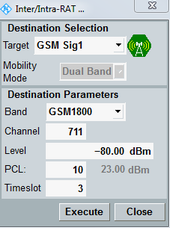
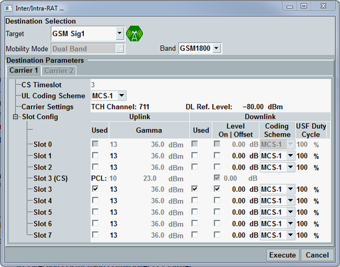

The individual connection states are controlled via the ON | OFF key, via hotkeys and via the MS.
The available hotkeys depend on the current connection state. Below all possible hotkeys are described.
For background information, refer to "Connection States".
The ON | OFF key is used to turn the DL signal transmission on or off. The current state is shown by the softkey. The signal transmission can be switched off any time, independent of the current connection state. A yellow sandglass symbol indicates that the signaling generator is turned on or off.
The state "RDY" means that the signaling application is ready to receive an inter-RAT handover from another signaling application (e.g. from WCDMA). This state is initiated by the application acting as source of the handover.
While the DL signal is on, the signaling application provides a trigger signal, see "Trigger Signals".
Remote command:Any interaction with a mobile under test requires a GSM downlink signal (cell). When the signal is available (state ON, no sandglass), connection control hotkeys appear in the hotkey bar. The available hotkeys depend on the current connection state which is visualized in the "Connection Status" panel of the "GSM Signaling" view.
Possible hotkeys are:
Hotkey | Description |
|---|---|
"CS Connect" | Initiate a connection setup in the CS domain. When the MS starts ringing, the connection state alerting is reached. When the connection is accepted at the MS, the connection state changes to "Call Established". |
"PS Connect" | Initiate a connection setup in the PS domain. When the connection setup is complete the connection state changes to "TBF Established". |
"Release PDP Context" | Deactivate a PDP context, the connection state changes to "Attached". |
"CS Disconnect" "PS Disconnect" | Release a CS or PS connection. |
"Send CS SMS" | Send an SMS message to the MS via CS domain. |
"Send PS SMS" | Send an SMS message to the MS via PS domain. |
"Inter/Intra RAT ..." |
The hotkey appears in the hotkey bar when the R&S CMW enters the "Call Established" CS connection state or the "TBF Established" PS connection state.
The mobility management of GSM signaling is available within the signaling application, e.g. to another GSM band (CS or PS dual-band handover), to another signaling application, and to another instrument.
Note that the handover process can be monitored in the "Connection Status" panel of the "GSM Signaling" main view.
Refer to "Mobility Management" for detailed information about supported mobility management.
The hotkey "Inter/Intra RAT ..." opens a dialog for selection and configuration of the handover destination and initiation of the handover. The dialog differs depending on the connection scheme.

For a detailed step-by-step description of a handover, see "Mobility Management".
This parameter selects the mobility management destination. For a redirection to another instrument, select "No Connection" as target.
The cell icon indicates the cell state of the currently selected destination. When you select another signaling application, e.g. "LTE Sig1", the destination cell is switched on automatically and the target cell state changes to RDY (ready for handover).
Remote command:This parameter selects the mechanism to be used.
- Dual-band handover is supported only within the GSM signaling application for CS and PS connections.
- Handover and redirection are only supported for CS connections. They are applicable to another signaling application or to another instrument as a target.
- Cell change order is only supported for PS connections. It is applicable only to another signaling application.
For a description of the mobility modes, see "Mobility Management".
Remote command:The "Destination Parameters" display current settings of the selected signaling application target, typically operating band and channels. You can modify these settings before starting the handover.
For a redirection to another instrument, the "External Destination Parameters" are displayed instead (radio access technology and typically operating band and channel). Configure them according to the actual configuration of the other instrument. There is no communication between the two instruments, so the settings at both instruments must match.
The commands listed here are relevant for redirection to another instrument.
For mobility management to another signaling application in the same instrument, use the commands provided by the signaling application target. There are no special handover commands for this purpose.
Please note that the operating band and channels of the currently used GSM signaling application can be reconfigured directly. It is not required to open the handover dialog for that purpose.
- Channel: see "Channel / Frequency"
- Level: see "DL Reference Level"
- PCL: see "Circuit Switched > PCL"
- Timeslot: see "Timeslot"
Intra-GSM mobility management:
Intra-GSM handover during a processing of inter-RAT mobility management (only remote control):
Mobility management to another instrument:
- For intra-RAT dual-band handover, the settings correspond to:
– "Slot Configuration" parameters, described in "Slot Configuration Dialog" and – "Band" parameter, described in "Band". - For cell change order to another RAT, the settings correspond to the "Mobility Mode" and "Mobility Mode" described in the section of CS handover.

To initiate a handover with the configured settings, press the "Execute" button.
Remote command:For dual band handover:
For cell change order: